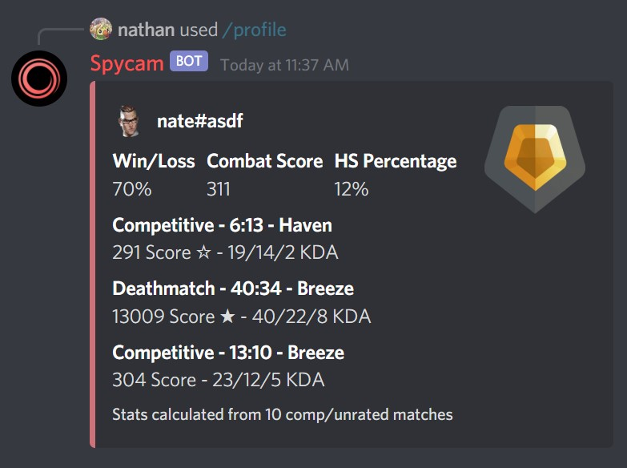
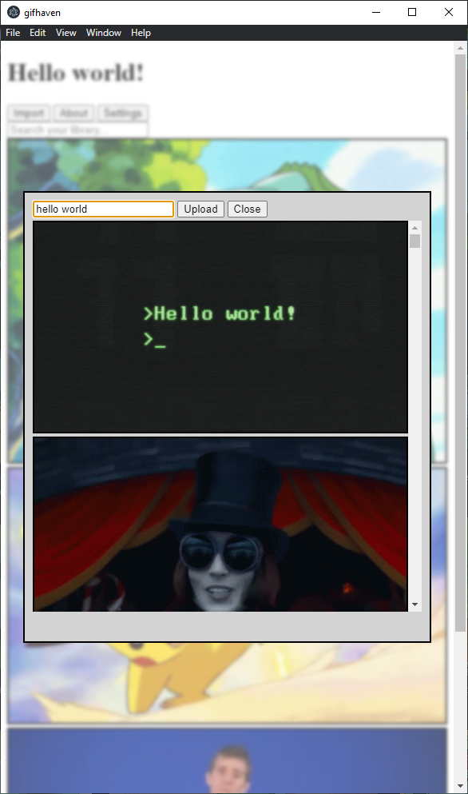

Hey, my name is Ethan
I'm a motivated software engineer studying at the College of William & Mary
Check out what I've been working on
Portfolio
Willem and Mike [play the game] [source code]
Willem and Mike is a short top-down RPG game about a student declaring their college major at William & Mary. Willem and Mike was the first place winner of the William & Mary Cypher VIII Hackathon.

Dialog trees were a big focus during development
I lead a team of three in brainstorming, rapid prototyping, asset creation, and play testing. The game is built in Unity and deployed with WebGL + Github Pages (so you can play it right now from your browser!). Previous Unity leadership experience, along with some FANTASTIC teammates helped us iterate at a very effective pace.
Spycam [website] [library github]
Spycam is a Discord bot built using my own open source wrapper of Riot Games' REST API to synthesize data from VALORANT (a competitive first-person shooter).
For example, Spycam can send a notification in a text channel when a user completes a match, or help them track their current win-streak.
Spycam uses an OAuth flow to authenticate with players' Riot Accounts and the backend runs on Google Cloud managed with Docker. Monitoring is done with self-hosted Grafana, Prometheus, and Loki.

A Spycam command that aggregates data from a player's match history
As the sole person behind this project I have prototyped the product, pitched/communicated with Riot Games for production API access, designed the server backend, and implemented all code.
Spycam is currently used in over 1000 Discord servers and has been featured by IGN India.
Chess3
Chess3 is an original networked multiplayer turn-based strategy game built in Unity with C#.
Chess3 is a collaborative effort that is seeing active development.
I manage the project and serve as our lead engineer.
The project is organized on a private GitHub repository, and we use issues/branches extensively to manage the concurrent work of four contributors.

A playtest screenshot from Chess3
This is a great exercise in API design, and a chance to let other people interact with my code.
Setting up (and teaching my friends how to use) source control for this is a fantastic opportunity to practice working as a team.
Botw Freecam [github]
I developed and maintain a fork of etra0's fantastic custom camera for The Legend of Zelda: Breath of the Wild.
I learned a bit of Rust to take the core tools that he built, and then adapt them to better serve my needs.
A video that I produced using my modified camera tools
I was really motivated to work on this because the existing tools were so close to what I was looking for, but lacking a few deal-breaker features like editable paths and save states.
I didn't have any knowledge of Rust at the time, but it was a great opportunity to dive in and see what I could figure out.
GifHaven [github]
GifHaven is a WIP tool for finding, saving, storing, and aggregating gifs.
GifHaven is being built with Electron and Typescript and is serving as a way for me to get my hands dirty with more interactive web design.

This screenshot shows off basic Tenor search functionality, as well as some very in-progress CSS
One of the most rewarding parts about GifHaven is that I get the "behind the curtain" experience where I choose how much customization and control I want to expose to the user.
Right now I'm focused on creating a flexible core framework that transparently communicates to users how their data is stored.
AI Bot
The 'AI Bot' is a Discord bot built using fine-tuned GPT-2 models to create AI conversations that mimic human chat messages.
The project was my first time developing with the Gradle build tool, and my first time working with a Reactive Java Library.

Output from the bot is humorous
I learned how to set up a basic SQLite database, and spent a lot of time optimizing and managing the massive computation load that the AI generation required.